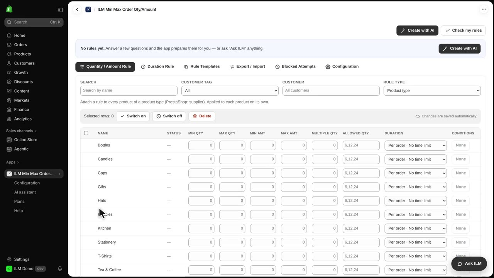
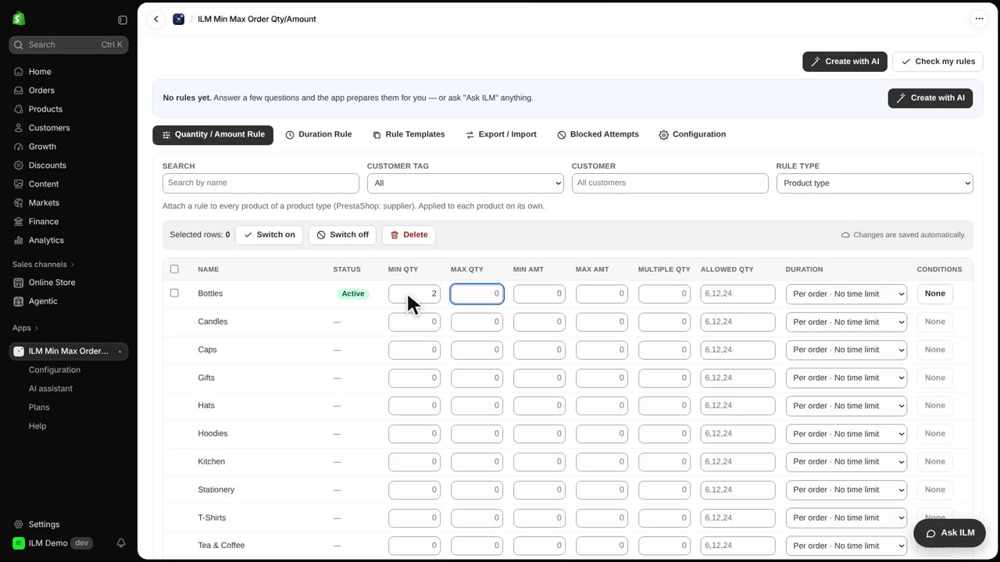
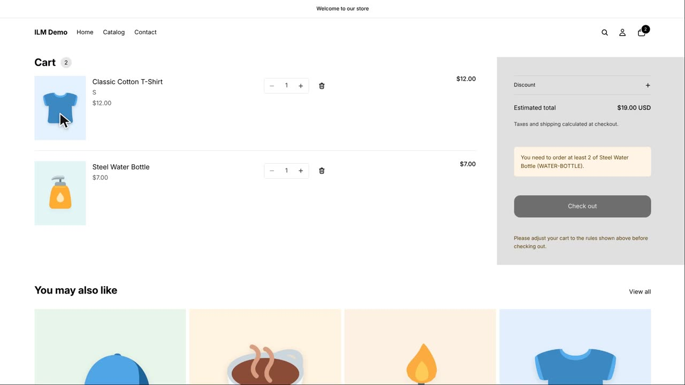

A product type rule lets you set one minimum or maximum for every product that shares the same product type in Shopify. Instead of editing products one by one, you write the rule once and it applies to the whole group. In this store the Steel Water Bottle has the product type Bottles, and we want shoppers to buy at least two bottles. Watch how one rule covers the Steel Water Bottle and leaves products without that type alone.
First, change Rule Type to Product type. The table now lists every product type in your store as its own row, so you can give each type its own quantity or amount limits. This is handy when a whole category, like all your apparel or all your pantry items, should follow the same buying rule.

Next, type two in the Min Qty field for the Bottles row. That means any product with the product type Bottles must be bought in a quantity of at least two.

Now we test it. The cart has one Steel Water Bottle and one Classic Cotton T-Shirt. Because the Steel Water Bottle has the product type Bottles, one bottle is not enough, and the cart shows a notice telling the shopper the minimum for that product.
The Classic Cotton T-Shirt has the product type T-Shirts, so the Bottles rule does not cover it: one T-shirt is fine and no message appears for it. Notice that only the Steel Water Bottle is named in the notice, because only that product is covered by the Demo rule.
